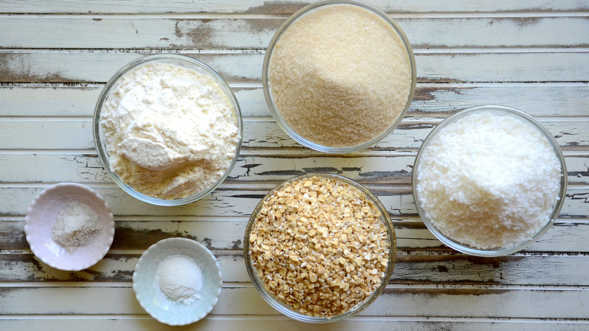
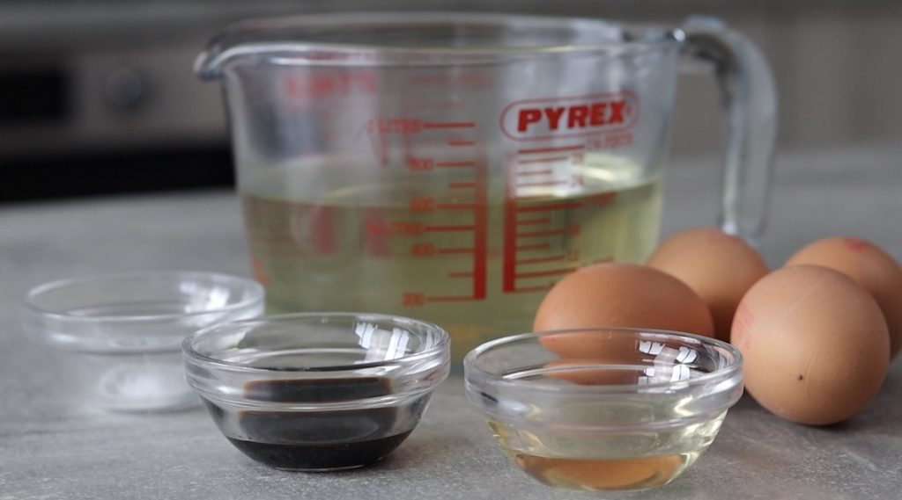

Basic Ingredients in Baking
Learn about the main ingredients you need and what they do:
Dry Ingredients

- Flour: Provides structure to baked goods.
- Sugar/Brown Sugar: Adds sweetness and helps with browning.
- Baking powder: Helps baked goods to rise.
- Salt: Enhances flavor.
Wet Ingredients

- Eggs: Bind ingredients and add moisture to baked goods.
- Butter or oil: Adds fat, flavor, and tenderness.
- Milk: Adds liquid to combine ingredients and moisture.
- Vanilla Extract: Adds and enhance more flavour to the baked goods .